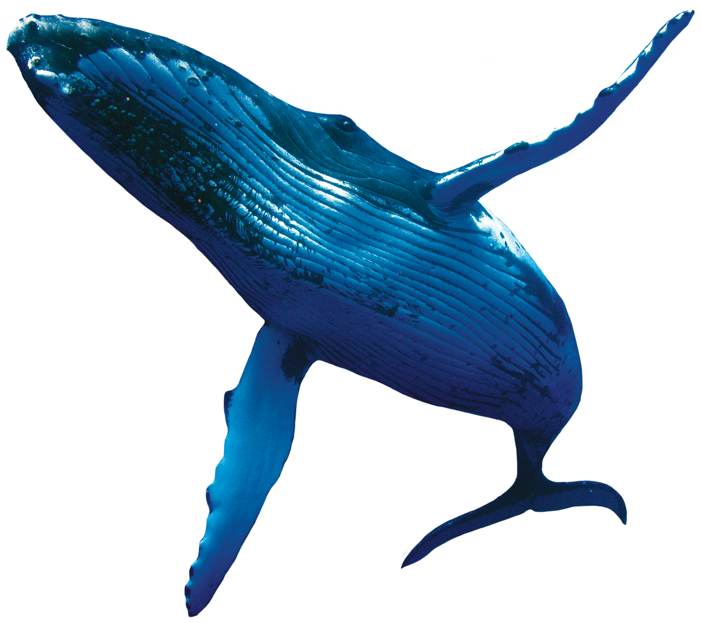

The elephant's grey skin is around 2.5 cm thick and has a fine covering of hairs.
A fully grown elephant eats 75 to 150 kg of plant food a day. Its diet includes grass, twigs, branches, leaves, flowers and fruit
The elephant's trunk is very useful.
Without it, an elephant could not reach the ground to feed because its neck is so short. The trunk is also used for taking food from high
in the trees and for breaking off branches. The elephant can smell with its trunk, pick up tiny objects and gently caress its young.
HOW CAN YOU TELL AN AFRICAN ELEPHANT FROM AN ASIAN ELEPHANT?
The African elephant is bigger and has larger ears and longer tusks. The head and body of the African elephant measures up to 7.5 m long.
The Asian elephant measures up to 6.5 m long and has a more humped back.
The African elephant's trunk has two flexible finger-like lips, while the Asian animals trunk has only one lip.
The blue whale is the largest whale, and also the largest mammal that has ever lived. It measures more than 30 m long and weighs at least 90 tonnes. The biggest blue whales may weigh more than twice this amount. Although it is so huge, the blue whale is not a fierce hunter. It eats tiny shrimp-like creatures called krill. It may gobble up as many as four million of these in a day.

WHY DO SOME WHALES MIGRATE?
Whales such as humpbacks migrate - travel seasonally - to find the best conditions for feeding and breeding.
They spend much of the year feeding in the waters of the Arctic and Antarctic, where there is lots of krill to eat. When it is time to give birth, the humpbacks travel to warmer waters near the equator.
The emperor penguin lives in Antarctica and is the biggest penguin in the world. It stands about 115 cm tall.
Like all penguins, it cannot fly, but it is an expert swimmer and diver, using its wings as paddles.
It spends most of its life in the water, where it catches fish and squid to eat.
Most of the 18 species of penguin live in or near Antarctica, but some are found in warmer areas.
There are several species around New Zealand and South America, one in the tropical Galapagos Islands and
one on South African coasts. There are no penguins in the northern hemisphere.
Penguins can swim at speeds of 13 km/h, but they may move even faster for short periods.
They can dive under water for two minutes or more. Some penguins are believed to be able to stay under water for up to 20 minutes.
The little, or fairy, penguin is the smallest penguin. It is only about 40 cm long. It lives in waters off the coasts of New Zealand and Tasmania, Australia.